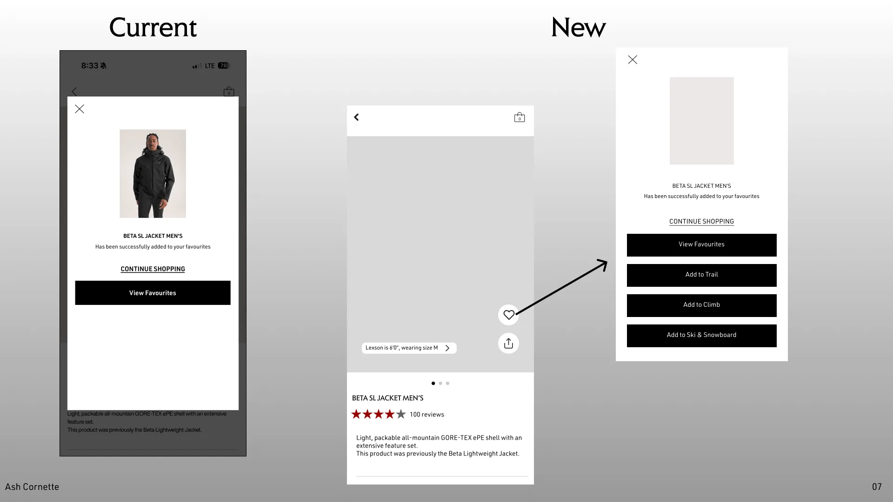
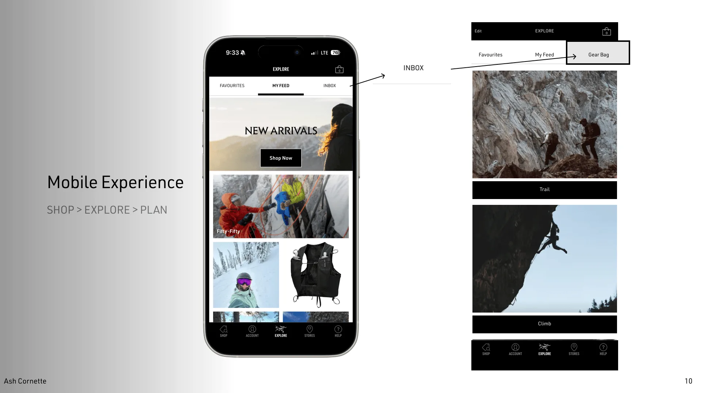

The app skips the question
Redesigned Arc'teryx's favourite modal to turn a dead-end save into activity-specific gear planning.
Walk into the Vancouver flagship and a staff member asks what you're doing: alpine day, ski tour, climbing. They build a layering recommendation around the answer. That's the brand experience.
The app skips it. You favourite a product, a modal says "successfully added," and you land in a generic pile. Trail ends.
The in-store experience layers context: brand → activity → kit → product. The app skips to the middle. A favourite without an activity, without a bag, without a system.
One decision fixed it. Replace the dead-end CTA with three activity-specific ones. View Favourites stays. Add to Trail, Add to Climb, and Add to Ski & Snowboard join it. Same modal. Same heart tap. Different destination.
The modal

Three new CTAs sorted by activity. Tap one and the product joins that gear bag. You've started planning a trip without realising you started.
The gear bag

Each CTA routes into a bag the user can review before a trip. One tap away inside the Explore tab, alongside Favourites and My Feed.
Prototype
heart-tap → activity CTA → gear bag
Before / After
- A wasted high-intent moment converted into a planning action, no extra taps.
- An infrequently-opened app given a reason to open between purchases.
- Cross-sell reframed quietly: you're not buying a jacket, you're filling a slot in your kit.
Tools work only if the moment is right
The modal already existed. The heart tap already existed. Activity kits were already happening in-store. The gap was between them. Closing it took three CTAs and one new tab.
The assumption is the risk
The whole redesign rests on one observation. If the favourite modal isn't actually the highest-intent moment for most users, the concept loses its grounding. A diary study with 5–8 outdoor enthusiasts would test it directly.
Ship the edge case on Day 1
Trail / Climb / Ski maps to Arc'teryx's marketing categories, but people build mixed kits. The custom bag can't be a stretch goal.